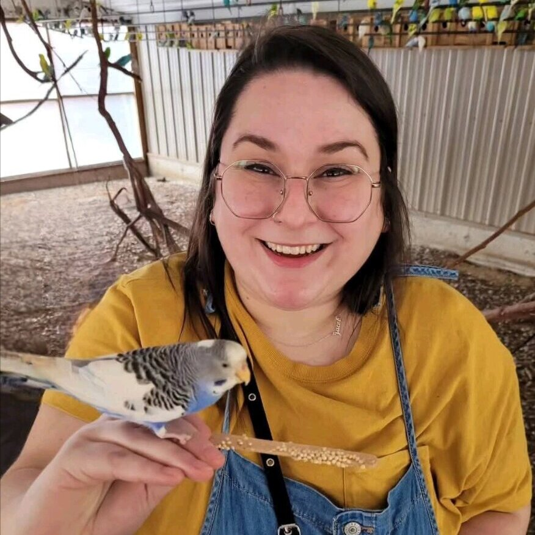

10+ Years of Experience
I'm Jordan — a dedicated nanny specializing in newborns through early childhood. CPR & First Aid certified, background checked, and ready to become a reliable part of your family's routine.
I'm an infant-focused nanny with over 10 years of hands-on experience, specializing in newborns through 16 months. I focus on creating calm, consistent routines that support sleep, feeding, and early developmental milestones — all while providing a warm, attentive environment for your baby.
I hold a college degree from Edgewood College and have completed additional training in SIDS prevention, shaken baby awareness, and infant development. I value clear communication and being a reliable, supportive presence for every family I work with.

Here's what sets my care apart.
With dedicated training in infant development, SIDS prevention, and newborn care, I bring specialized knowledge to the most important stage of your child's life.
I build real bonds with the children I care for. Parents tell me their kids run to the door to greet me — that kind of trust and excitement means everything.
Available Tuesday through Friday, 7:30 AM to 5:00 PM. Whether you need a few days a week or a consistent part-time schedule, I'll work with you.
From crafts and creative projects to outings at museums, play places, and swimming — I keep kids active, entertained, and learning every single day.
I keep parents in the loop with updates and photos throughout the day. You'll always know how your little one's day is going and what milestones they're hitting.
On time, every time. Families count on me to be dependable, prepared, and fully present. Background checked, certified, and always ready.
Dedicated, one-on-one childcare in your home for infants through preschool age. Available for part-time or full-time schedules that fit your family's needs.
Healthy, kid-friendly meals and snacks prepared during my time with your family. Happy to accommodate dietary needs and preferences.
Tidying play areas, children's laundry, and keeping shared spaces organized so you come home to a calm, clean environment.
Grocery runs, supply restocking, and safe drop-offs and pick-ups for activities and appointments. I'll keep things running smoothly.
Comfortable with pets and happy to help with feeding, walks, and basic care while I'm with your family. Red Cross Pet First Aid trained.
Overnight care for newborns and infants, so exhausted parents can get the rest they need while knowing their baby is in expert hands.
“Jordan has been our nanny for over a year, and we can't imagine this time without her. She shows up every morning right on time, makes our son breakfast, and fills his day with crafts, outings to museums and play places, and fun errands. We love getting photos of him smiling on his adventures. During nap time she tidies up, and we always come home to a cleaner house than we left. As first-time parents, she's been an incredible source of knowledge — she even caught the early signs of an ear infection before it got worse. Anyone would be lucky to have her.”
— Cole M.
“Our toddler used to cry at every handoff. Now he runs to greet Jordan at the door. That tells you everything you need to know.”
— David P.
“Jordan watched my daughter for a couple of summers while I was in nursing school and working full time. My girl would come home talking about all the fun things she and 'Jow-den' did that day. She keeps kids engaged and active like no one else. Can't recommend her enough.”
— Celine J.
“Jordan watched my little ones before we moved, and she treated them like her own. She was always openly communicating and genuinely cared about their wellbeing. Could not recommend her more.”
— Ali C.
I'd love to hear about your family and how I can help. Reach out anytime!
Greater Madison metro area
Tues – Fri, 7:30 AM – 5:00 PM
Part-time or full-time
Starting at $25/hr
Reach out for details